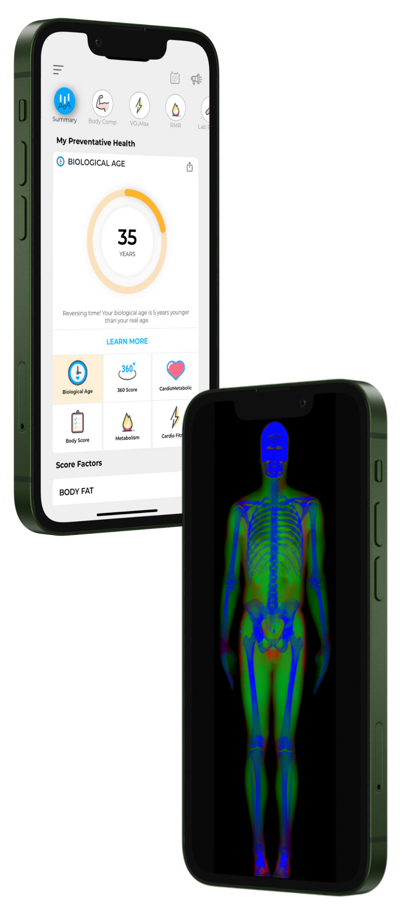

DexaFit · Coming to Brasil
DexaFit · Coming to Brasil
Four numbers decide
whether you get leaner,
stronger, and healthier.
Lean mass. Visceral fat. Bone density. VO₂ Max. Four clinical measurements in a single visit — the foundation every training plan, diet, and health decision should be built on.

Your Body's True Age
Phil, 34
34
Chronological
→
27
Biological
7 Years Younger · Top 12%
What DexaFit Revealed
Lean Mass
154 lbs
ExcellentVisceral Fat
0.41 lbs
GoodVO₂ Max
85th %ile
ExcellentBone Density
+1.2 T-score
Excellent Why It Matters
Why It Matters